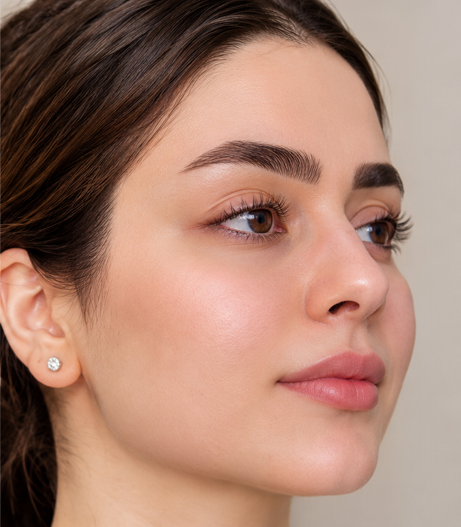
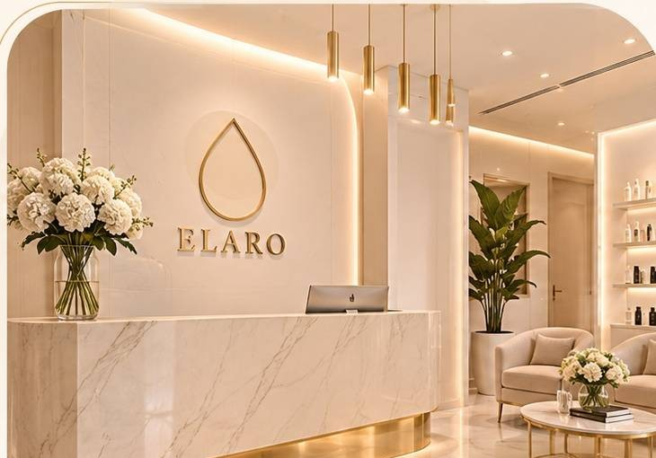

مراقبت و شادابی پوست
نمونه نمایشی
برای دیدن هر تصویر، دستگیره را به چپ و راست بکشید.
در کلینیک الارو، مسیر مراقبت از پوست و مو با مشاوره تخصصی و برنامهای متناسب با نیاز شما آغاز میشود.

زیبایی طبیعی، انتخاب آگاهانهچند انتخاب محبوب برای شروع مسیر مراقبت و زیبایی شما
نمونهای تعاملی از گالری تصاویر الارو

برای دیدن هر تصویر، دستگیره را به چپ و راست بکشید.
از مشاوره اولیه تا انتخاب روش مراقبت، تلاش میکنیم تجربهای روشن، محترمانه و متناسب با نیاز شما فراهم کنیم.
تیم نمونه برای نمایش نسخه آزمایشی وبسایت
چند نمونه نظر برای نمایش بخش دیدگاهها
متنهای این بخش نمونه نمایشی هستند؛ پیش از انتشار، آنها را با نظرهای واقعی و با اجازه مراجعهکنندگان جایگزین کنید.
از بخش رزرو نوبت، خدمت، پزشک، تاریخ و ساعت را انتخاب کنید و اطلاعات تماس را وارد کنید.
در نسخه نمایشی، با کد پیگیری و شماره موبایل میتوانید نوبت را مشاهده و در بازه مجاز لغو کنید.
خیر. این پروژه نمونه فرانتاند است و اطلاعات فقط در مرورگر شما ذخیره میشوند.